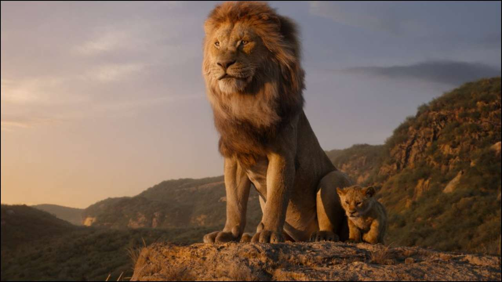

This article is about the 1994 animated film. For its 2019 remake, see
The Lion King (2019 film). For the franchise as a whole, see The Lion
King (franchise). For other uses, see The Lion King (disambiguation).
The Lion King is a 1994 American animated musical drama film produced by
Walt Disney Feature Animation and released by Walt Disney Pictures. It
is the 32nd Disney animated feature film, and the fifth animated film
produced during a period known as the Disney Renaissance. The Lion King
was directed by Roger Allers and Rob Minkoff, produced by Don Hahn, and
has a screenplay credited to Irene Mecchi, Jonathan Roberts, and Linda
Woolverton. Its original songs were written by composer Elton John and
lyricist Tim Rice, with a score by Hans Zimmer. The film features an
ensemble voice cast that includes Matthew Broderick, James Earl Jones,
Jeremy Irons, Jonathan Taylor Thomas, Moira Kelly, Nathan Lane, Ernie
Sabella, Rowan Atkinson, Robert Guillaume, Madge Sinclair (in her last
film role), Whoopi Goldberg, Cheech Marin, and Jim Cummings. The story
takes place in a kingdom of lions in Africa and was influenced by the
Biblical stories of Joseph and Moses, and William Shakespeare's Hamlet.